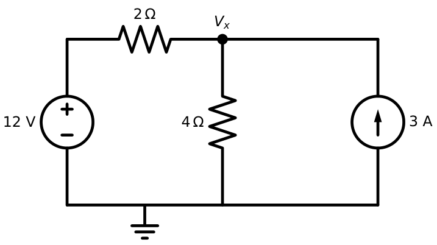
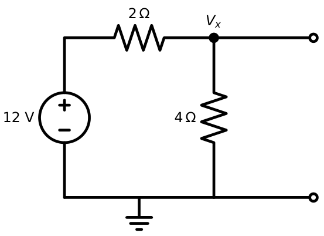
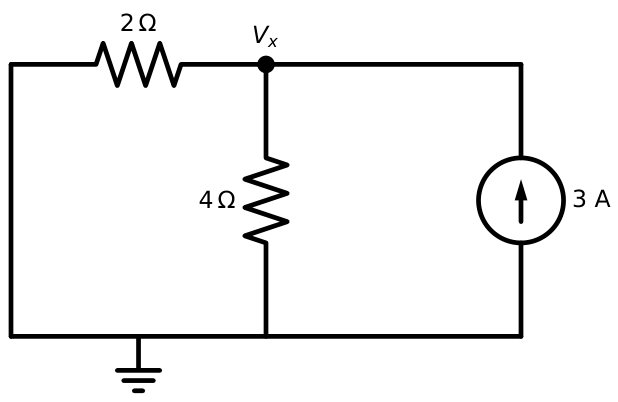
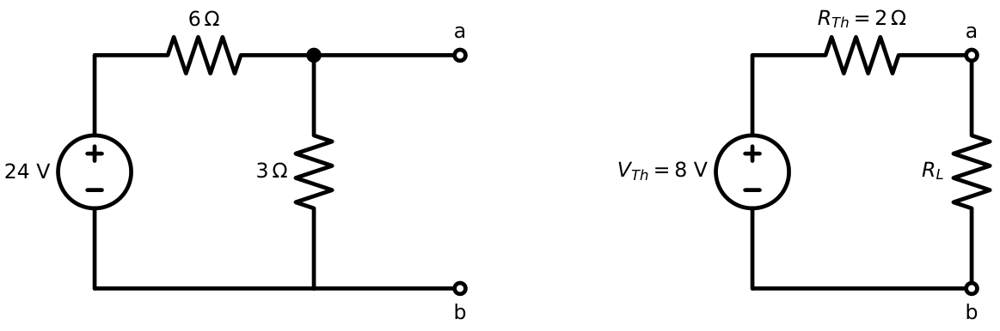
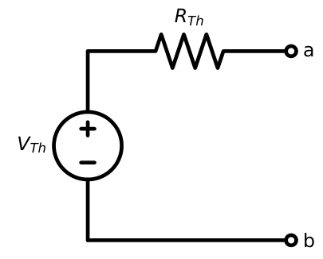
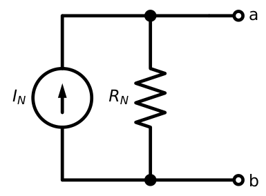
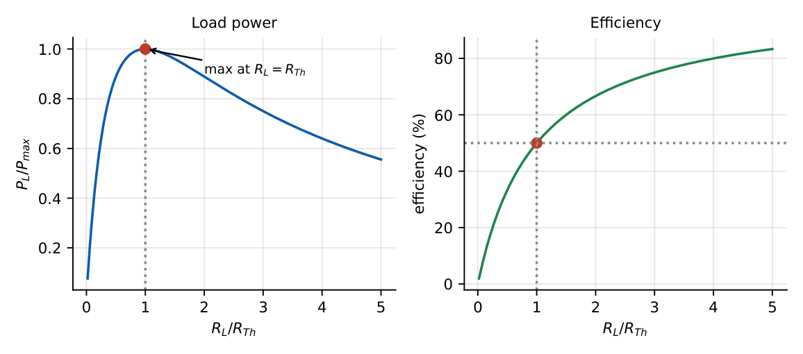
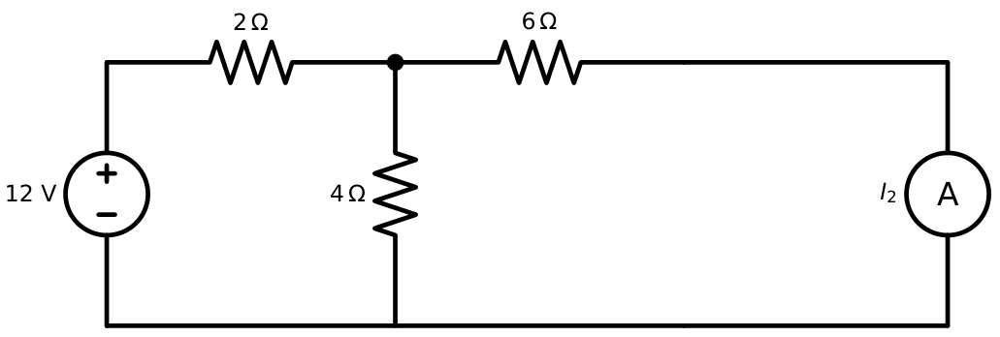
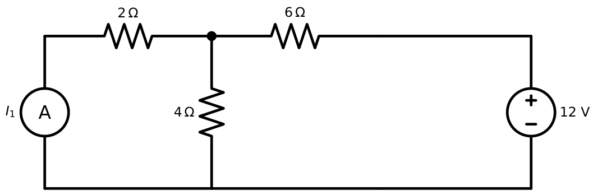
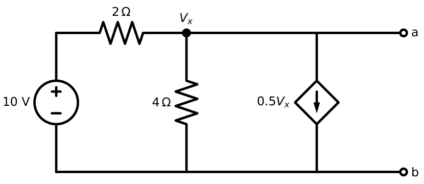

Network Theorems
In this chapter
- 4.1 Linearity and linear networks
- 4.2 Superposition theorem
- 4.3 Thevenin’s theorem
- 4.4 Norton’s theorem
- 4.5 Relationship between Thevenin and Norton equivalents
- 4.6 Maximum power transfer theorem
- 4.7 Reciprocity theorem
- 4.8 Conditions for reciprocity
- 4.9 Dependent sources and network theorems
- 4.10 Thevenin/Norton resistance with dependent sources
- 4.11 AC-network applications
- 4.12 Common GATE traps and problem classification
Thevenin/Norton with dependent sources, maximum power transfer (DC and AC), superposition with mixed sources, and reciprocity. At least one 2-mark question per paper comes from this chapter.
4.1 Linearity and linear networks
A network is linear if it obeys homogeneity (\(x\to kx\Rightarrow y\to ky\)) and additivity (\(x_1+x_2\to y_1+y_2\)) between every source and every response. Circuits made of R, L, C, independent sources and linear dependent sources are linear. All the theorems of this chapter require linearity (except Tellegen’s and the substitution theorem).
A diode, a transistor in its non-linear region, or an element with \(v\propto i^2\) makes the network non-linear; superposition and Thevenin then fail. Independent sources are allowed in a linear network: the response is an affine function of the source values, and it is linear in the set of sources taken together.
4.2 Superposition theorem
In a linear network with several independent sources, the response (current or voltage) at any element equals the algebraic sum of the responses caused by each independent source acting alone, with all other independent sources set to zero.
- Keep one independent source; replace other voltage sources by short circuits, other current sources by open circuits.
- Keep all dependent sources (they are not independent).
- Compute the desired response; repeat for every source; add algebraically (with signs).
A \(12\) V source in series with \(2\ \Omega\) feeds a node; the node has \(4\ \Omega\) to ground and a \(3\) A current source injecting into it (Figure 4.1).
\(12\) V alone (current source open): \(V_x'=12\times\frac{4}{2+4}=8\) V.
\(3\) A alone (voltage source shorted): \(V_x''=3\times(2\parallel4)=3\times\frac43=4\) V.
Total: \(V_x=8+4=12\) V. Node check: \((12-V)/2+3=V/4\Rightarrow V=12\) V. ✓



Superposition holds for voltage and current, never for power. Power is quadratic: \(P\neq P_1+P_2\) in general. Compute the total current or voltage first, then the power.
4.3 Thevenin’s theorem
Any linear two-terminal network can be replaced, as seen from those terminals, by an ideal voltage source \(V_{Th}\) in series with a resistance \(R_{Th}\).
- \(V_{Th}=V_{oc}\), the open-circuit terminal voltage.
- \(R_{Th}\): (i) with only independent sources, zero all sources and find \(R_{ab}\); (ii) with dependent sources, use \(R_{Th}=V_{oc}/I_{sc}\) or the test-source method (\(R_{Th}=v_{test}/i_{test}\) with independent sources zeroed).
A \(24\) V source drives a series \(6\ \Omega\); a shunt \(3\ \Omega\) resistor sits across terminals \(a\)–\(b\), and the load will be connected there (Figure 4.2).
\(V_{Th}=24\times\dfrac{3}{6+3}=8\) V. \(R_{Th}=6\parallel3=2\ \Omega\).
With \(R_L=6\ \Omega\): \(I_L=\dfrac{8}{2+6}=1\) A, \(P_L=6\) W.

4.4 Norton’s theorem
Any linear two-terminal network can be replaced by an ideal current source \(I_N=I_{sc}\) in parallel with \(R_N=R_{Th}\).
4.5 Relationship between Thevenin and Norton equivalents
\(V_{Th}=I_NR_{Th},\qquad R_N=R_{Th}=\dfrac{V_{oc}}{I_{sc}}\).
They are source transformations of each other. Exceptions: if \(R_{Th}=0\) (ideal voltage source) no Norton form exists; if \(R_{Th}=\infty\) (ideal current source) no Thevenin form exists.
In the previous example the short-circuit current is \(24/6=4\) A (\(3\ \Omega\) is shorted) so \(R_{Th}=8/4=2\ \Omega\) ✓.


4.6 Maximum power transfer theorem
For a fixed source \((V_{Th},R_{Th})\), the power delivered to a variable resistive load \(R_L\) is maximum when \(R_L=R_{Th}\).
\(P_L=\dfrac{V_{Th}^2R_L}{(R_{Th}+R_L)^2}\). Differentiating, \(\dfrac{dP_L}{dR_L}=V_{Th}^2\dfrac{(R_{Th}+R_L)-2R_L}{(R_{Th}+R_L)^3}=0\Rightarrow R_L=R_{Th}\). Then \[P_{max}=\frac{V_{Th}^2}{4R_{Th}}=\frac{I_N^2R_{Th}}{4}.\]
Efficiency: \(\eta=\dfrac{R_L}{R_{Th}+R_L}=50\%\) at maximum power, i.e. half the power is dissipated in \(R_{Th}\). (That is a statement about the Thevenin model. The original network may dissipate a different amount internally.)

In the Thevenin example, \(R_L=R_{Th}=2\ \Omega\) gives \(P_{max}=8^2/(4\times2)=8\) W.
When the load is variable and the question asks for max power in a resistor \(R_x\) that is part of the network (not the load), treat \(R_x\) as the load and find the Thevenin equivalent seen by \(R_x\). If instead the resistor being varied is part of the source network with the load fixed, maximum power in the load occurs when the varied resistor is zero, not when it equals the load.
4.7 Reciprocity theorem
In a linear, bilateral, passive network with a single independent source, the ratio of the excitation to the response is unchanged when the excitation and response points are interchanged. (Voltage source \(V\) at port 1 producing current \(I\) at port 2 short-circuit \(\Leftrightarrow\) same \(V\) at port 2 producing the same \(I\) at port 1.)
T-network with \(R_a=2\ \Omega\), \(R_b=4\ \Omega\) (centre shunt), \(R_c=6\ \Omega\). \(12\) V at port 1, port 2 shorted: \(I_2=\dfrac{12R_b}{R_aR_b+R_aR_c+R_bR_c}=\dfrac{48}{44}=\dfrac{12}{11}\) A. Now \(12\) V at port 2, port 1 shorted: same denominator, same numerator, \(I_1=\dfrac{12}{11}\) A. ✓


4.8 Conditions for reciprocity
Reciprocity holds only if: (i) the network is linear; (ii) it is bilateral (components behave the same in both directions: no diodes, transistors); (iii) it has no dependent sources (in general); (iv) there is a single independent source; (v) it has no gyrators or non-reciprocal media (ferrites). In two-port terms, reciprocity means \(z_{12}=z_{21}\), \(y_{12}=y_{21}\), \(AD-BC=1\), \(h_{12}=-h_{21}\) (Chapter 13).
4.9 Dependent sources and network theorems
- Superposition: do not zero the dependent source; solve with one independent source at a time; the dependent source’s value changes with each solution.
- Thevenin/Norton: \(R_{Th}\) cannot be found by “zero all sources and combine”: use the test-source method. \(R_{Th}\) may be negative, which is legitimate for networks containing dependent sources (they are active).
- Maximum power: if \(R_{Th}<0\), no maximum exists for a resistive load.
4.10 Thevenin/Norton resistance with dependent sources
Terminals \(a\)–\(b\): node \(x\) is terminal \(a\), ground is \(b\). A \(10\) V source in series with \(2\ \Omega\) feeds node \(x\); \(R_2=4\ \Omega\) from \(x\) to ground; a VCCS \(0.5\,V_x\) (A) draws current from \(x\) to ground (Figure 4.6).
Open circuit: \(\dfrac{10-V_x}{2}=\dfrac{V_x}{4}+0.5V_x\Rightarrow V_{oc}=4\) V.
Short circuit (\(V_x=0\)): \(I_{sc}=10/2=5\) A. So \(R_{Th}=4/5=0.8\ \Omega\).
Test source: set the \(10\) V source to \(0\) (short), apply \(v\) at \(a\): \(i=\dfrac{v}{2}+\dfrac{v}{4}+0.5v=1.25v\Rightarrow R_{Th}=0.8\ \Omega\). ✓
Thevenin: \(4\) V in series with \(0.8\ \Omega\).

4.11 AC-network applications
All theorems carry over to phasors: replace \(R\to Z\), \(V_{Th}\to\tilde V_{Th}\). The max-power condition becomes conjugate matching \(Z_L=Z_{Th}^{*}\) (Chapter 8), giving \(P_{max}=|\tilde V_{Th}|^2/(8R_{Th})\) for peak phasors. If \(Z_L\) is purely resistive, the best \(R_L=|Z_{Th}|\).
4.12 Common GATE traps and problem classification
| Type | Method | Trap |
|---|---|---|
| Direct formula | \(R_{Th}=V_{oc}/I_{sc}\), \(P_{max}=V^2/4R\) | wrong \(V\) (RMS/peak) |
| Circuit reduction | series–parallel, source transformation | wrong terminals |
| Multi-source | superposition or nodal | superposition of power |
| Dependent-source | test-source, \(V_{oc}/I_{sc}\) | zeroing dependent sources |
| Max-power numerical | find \(V_{Th},R_{Th}\), then \(R_L=R_{Th}\) | variable resistor in the source |
Q1. Superposition cannot be used to compute (A) voltage (B) current (C) power (D) both voltage and current.
Q2. A network has \(V_{oc}=10\) V and \(I_{sc}=2\) A. Its Thevenin resistance is (A) \(0.2\ \Omega\) (B) \(5\ \Omega\) (C) \(20\ \Omega\) (D) \(12\ \Omega\).
Q3. The efficiency of the Thevenin model at maximum power transfer is (A) 25% (B) 50% (C) 75% (D) 100%.
Answers: Q1 (C). Q2 (B): \(10/2\). Q3 (B).
Q4. In the superposition example, the current source is reversed (3 A leaving the node). \(V_x\) is (A) \(4\) V (B) \(8\) V (C) \(12\) V (D) \(-4\) V.
Q5. In the dependent-source example a load \(R_L=1.2\ \Omega\) is connected to \(a\)–\(b\). The load current is (A) \(1\) A (B) \(2\) A (C) \(3.33\) A (D) \(5\) A.
Answers: Q4 (A): \(8-4=4\) V. Q5 (B): \(4/(0.8+1.2)=2\) A.
Q6. A source has \(V_{oc}=20\) V. When a \(10\ \Omega\) load is connected the terminal voltage is \(16\) V. Its Thevenin resistance is \(\Omega\).
Q7. In the Thevenin example a load \(R_L=6\ \Omega\) is connected. The power absorbed by the load is W.
Answers: Q6: \(16=20\cdot10/(R_{Th}+10)\Rightarrow R_{Th}=2.5\ \Omega\). Q7: \(I=8/8=1\) A, \(P=6\) W.
Q8. Reciprocity theorem is valid for networks that are (A) linear (B) bilateral (C) containing a single independent source (D) containing diodes.
Answers: Q8: (A), (B), (C).
(i) Zeroing dependent sources. (ii) Applying superposition to power. (iii) Assuming max power transfer means max efficiency. (iv) Using \(R_L=R_{Th}\) when the varied resistor is in the source side. (v) Wrong terminals for \(V_{oc}\) and \(R_{Th}\). (vi) Norton current direction: \(I_N\) flows from \(a\) to \(b\) through the short.
T1. Find the Norton equivalent of a \(10\) V source in series with \(5\ \Omega\).
T2. A \(2\ \Omega\) resistor is the load of a network with \(V_{Th}=6\) V and \(R_{Th}=3\ \Omega\). Find its power and the maximum power the network could ever deliver to a resistor.
Answers: T1: \(I_N=2\) A, \(R_N=5\ \Omega\). T2: \(I=6/5=1.2\) A, \(P=2.88\) W; \(P_{max}=36/12=3\) W at \(R_L=3\ \Omega\).
- Superposition: one independent source at a time; V\(\to\)short, I\(\to\)open; keep dependent sources; never for power.
- Thevenin: \(V_{Th}=V_{oc}\); \(R_{Th}=V_{oc}/I_{sc}\) or zero sources (or test source with dependent sources). Norton: \(I_N=I_{sc}\), \(R_N=R_{Th}\); \(V_{Th}=I_NR_{Th}\).
- MPT: \(R_L=R_{Th}\), \(P_{max}=V_{Th}^2/4R_{Th}\), \(\eta=50\%\). AC: \(Z_L=Z_{Th}^*\), \(P_{max}=|V_{Th}|^2/8R_{Th}\) (peak).
- Reciprocity: linear, bilateral, single source, no dependent sources. \(z_{12}=z_{21}\), \(AD-BC=1\).
- \(R_{Th}\) may be negative with dependent sources.